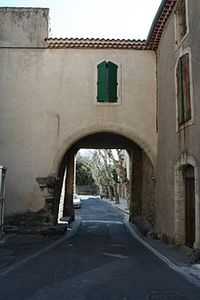
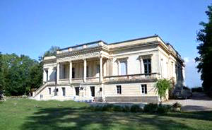
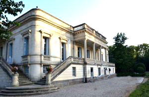
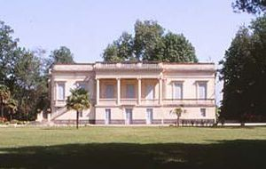
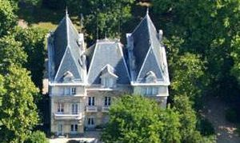

Recensement Jean-Claude Truffet
| Département | 34 — Hérault |
| Canton | Agde |
| Commune | Bessan |
| Type d'édifice | Château |
| Période d'origine | XVIII |





Deux châteaux à Bessan ville fortifiée, château de Saint-Louis et de Hortes BESSAN, Vers 1050-1100, commence à se construire le village fortifié de Bessan.
En 1209, l'armée des croisés, dont le chef militaire est Simon de Montfort, s'empare de la région, sous prétexte de chasser les Cathares, et dix ans plus tard les châteaux de Bessan et Touroulle deviendront propriété de son fils Amaury. En 1278, les Bessanais ont déjà obtenu du seigneur le droit d'élire des consuls (maires) pour s'occuper des affaires politiques. Lors de la Révolution Française, les citoyens de la commune se réunissent au sein de la société révolutionnaire, baptisée « société populaire des sans-culottes régénérée », avec 172 membres en l'an III. En 1851, lors du coup d'État de Napoléon III, le canon est pointé sur la grand'rue et une trentaine de Bessanais républicains sont déportés. En 1907, les Bessanais participent activement à la révolte des vignerons du Midi. En novembre 1942, les troupes allemandes entrent dans Bessan pour l'occuper. HORTES, dès le XVIIIe siècle en la personne d'un certain Mr Malibran d'Hortes député de Bessan. C'est en 1845 à l'occasion du mariage d'Alphonse Viennet avec Angélique Sicard que le domaine d'Hortes entre dans le famille, Alphonse et Angélique font construire dans les années 1860 l'actuel château qui n'a subi à ce jour aucune modification. Leur fils Charles (1851-1938) héritera du domaine . Il faudra attendre les années 1930 pour que le château soit à nouveau habité par Charlotte Viennet et son époux Pierre d'Andoque de Sériège. Ils s'y installeront quelques années après leur mariage et y vivront avec leurs 3 enfants.
SAINT-LOUIS est une demeure familiale située au cur dun parc, entre lHéraut et la montagne dAgde, une société qui est située à Marseillan, cette entreprise exerce son activité dans le domaine suivant : location de salles château de Saint-Loup.
Bessan l'ensemble patrimoine architectural intéressant , une fenêtre à meneau de la fin du Gothique (vers 1480) dans la rue de la République ; une maison médiévale restaurée dans la rue des Cours ; un encadrement de porte et balcon de 1830 dans la rue du Four ; l'intérieur d'un hôtel particulier de 1770 dans la rue de l'Opéra . En partant de la porte Saint-Pierre, le mur d'enceinte semble suivre les façades de la rue des Soleillers. Il était renforcé d'une tour à hauteur de la rue de la Brèche ; une tour qui, en ruine, sera démolie, permettant l'ouverture de la rue. Le conseil municipal siège dans l'ancienne tour des remparts, appelée aujourd'hui salle du conseil et des mariages. Au sein de cette salle est placée une Marianne en bronze de Georges Saupique. Saint-Louis est une demeure de style italienne avec des colonnes et des terrasses de mosaïques lui confèrent un charme exceptionnel et une allure de majestueuse villa romaine. Corps de logis rectangulaire à un niveau sur rez-de-chaussée Château d'Hortes corps de logis à deux niveaux, inséré entre deux pavillons saillants rectangulaires à trois niveaux toiture en croupe. Le domaine est alors constitué de vignes et de bâtiments en forme de cour carré abritant les bâtiments à usage viticole et à usage d'habitation. Si les bâtiments d'exploitation sont intacts, il ne reste, aujourd'hui, de l'ancienne demeure qu'une partie du corps de bâtiment et une tour.
Mr Malibran d'Hortes
"
Bessan, village fortifie château de Saint-Louis et de Hortes